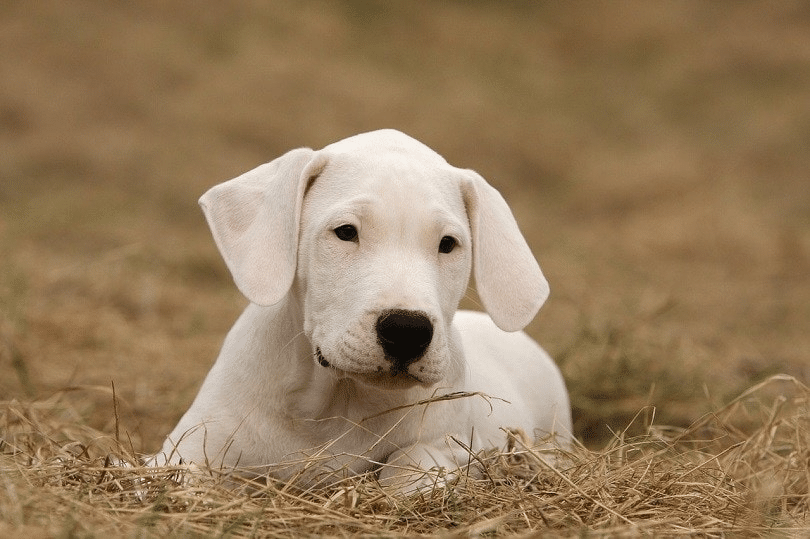
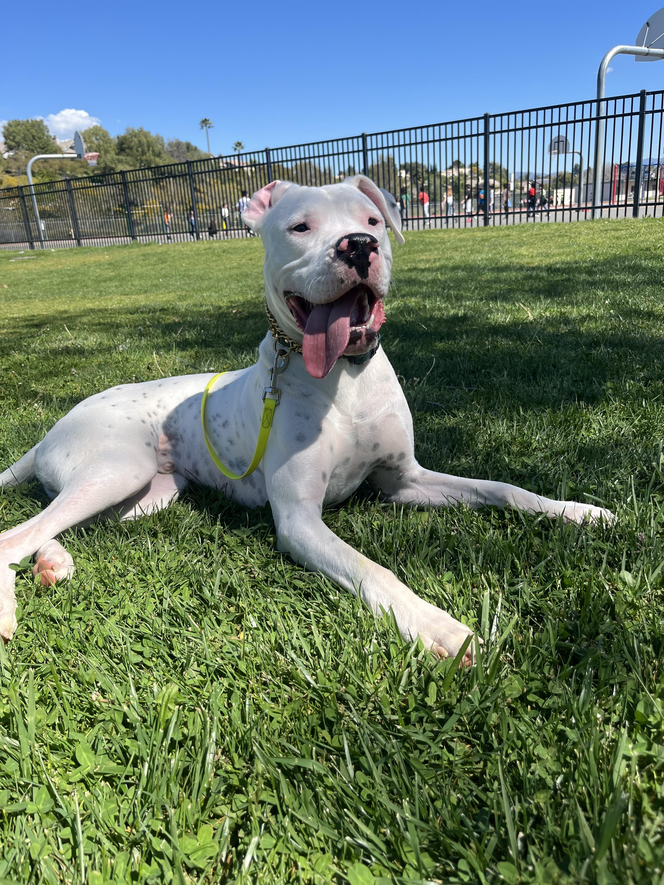
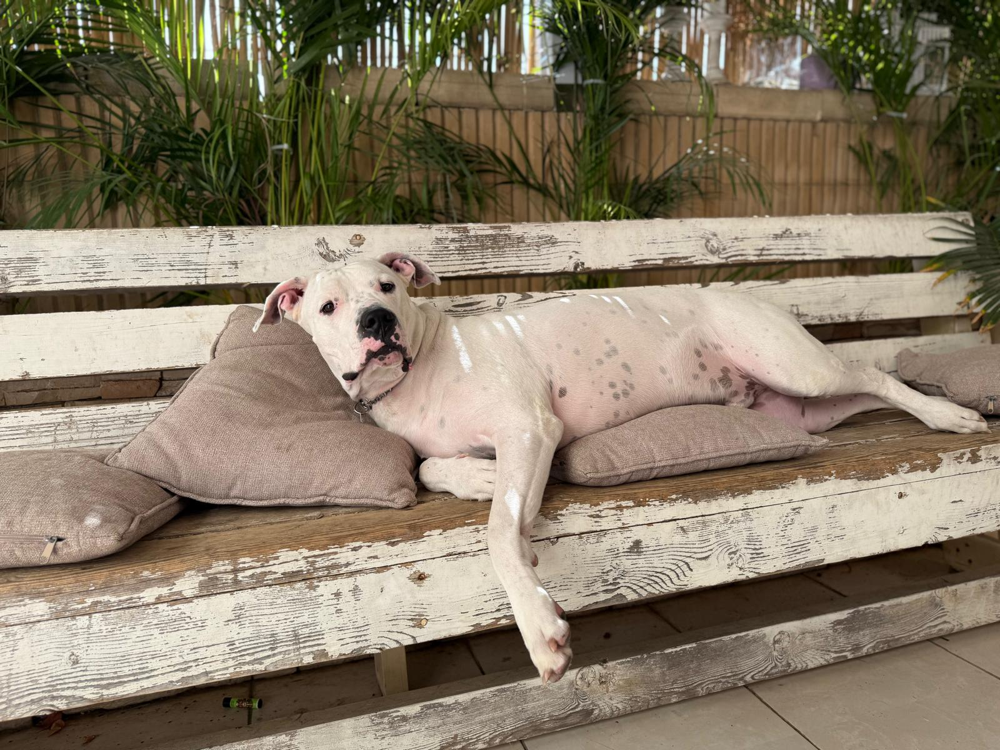
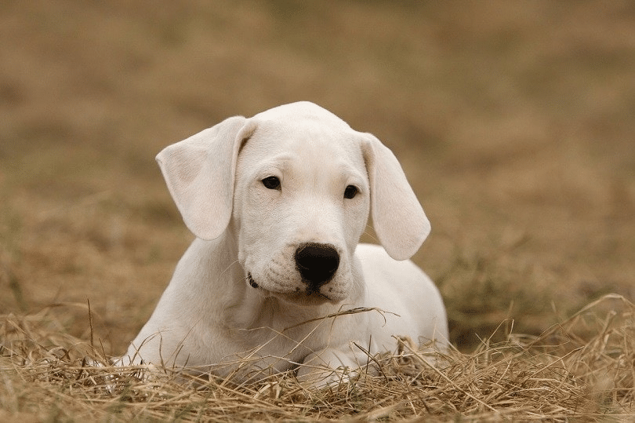
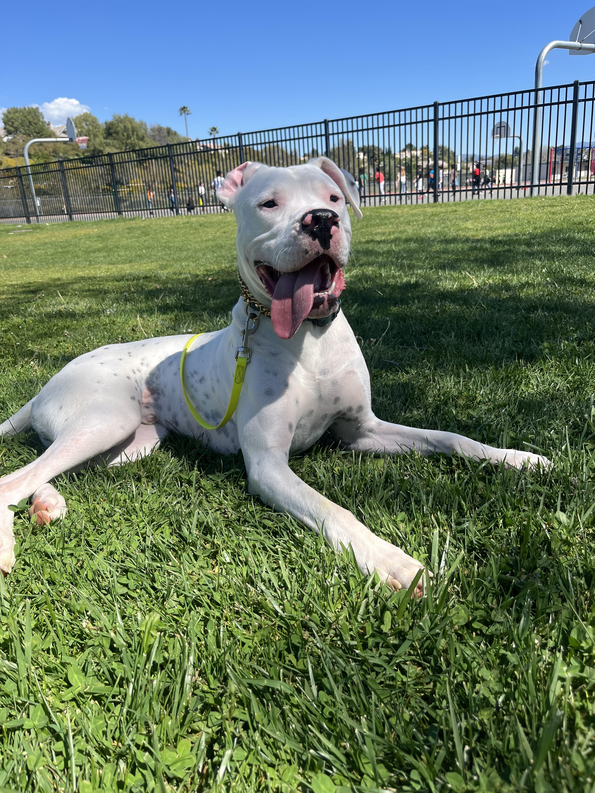
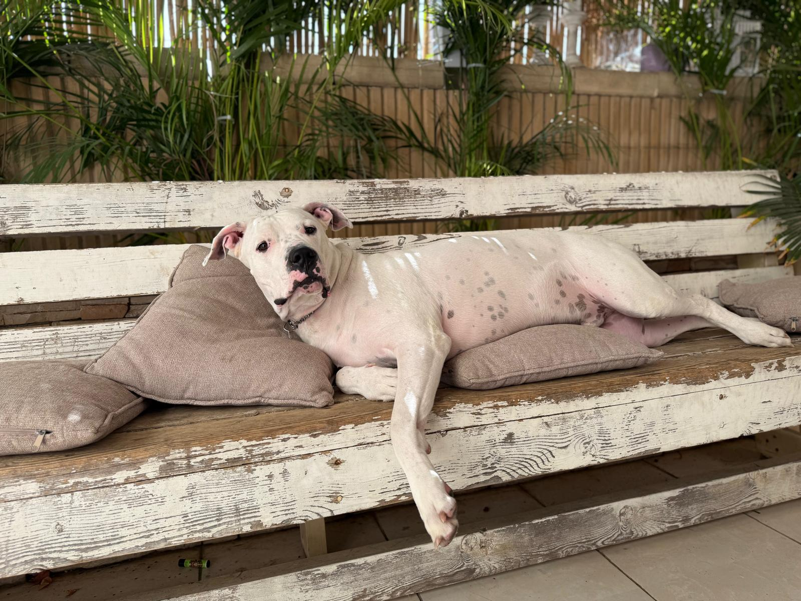

The Dogo Argentino is an Argentine breed of large dog of mastiff type. It was bred in the early twentieth century in Córdoba in central Argentina,
primarily for hunting large game such as peccaries, wild boar, and pumas.
In the 1920s Antonio Nores Martinez, a young student of Córdoba in central Argentina, set out with his brother Augustin Nores Martinez to create a new breed of big game hunting dog especially wild boar.
To do this, he mixed 10 different breeds until he got the desired breed.
The Dogo Argentino is a powerful and muscular dog breed originally developed in Argentina for big-game hunting, especially wild boar and puma.
Despite its tough appearance, the Dogo Argentino is known for being loyal, affectionate, and protective with its family.
The Dogo Argentino thrives in active households and needs plenty of exercise and mental stimulation to stay happy and healthy.
| Attribute | Males | Females |
|---|---|---|
| Height | 60–68 cm (24–27 in) | 60–65 cm (24–26 in) |
| Weight | 40–48.5 kg (90–105 lb) | 40–43 kg (90–95 lb) |
 




